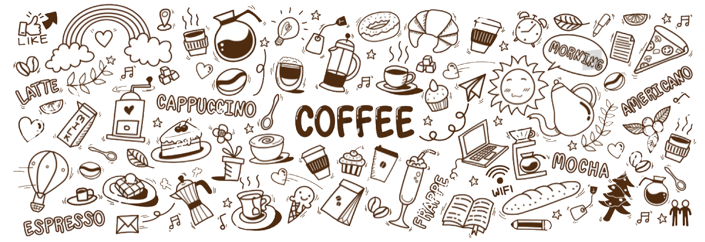

Välkommen till Gritty Café
Där god fika trivs och gäster blir mätta och glada!
Gritty Café är ett litet trivsamt café som älskar fika. Vi har ett stort utbud, hemlagat med kärlek och en trivsam miljö.
Gritty Café är ett litet trivsamt café som älskar fika. Vi har ett stort utbud, hemlagat med kärlek och en trivsam miljö.